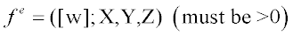

This command argument for inhomogeneous Monte-Carlo scattering.
Syntax
... [ SCATTER m [ k e t [ l ] ] ]
USER
| Option | Description |
|---|
| m | reference to a VOLUME scattering MODEL |
| k | the magnitude of k is the SURFACE designation for this
function |
| t | step length |
Remarks
- ASAP command arguments are optional and
must follow a command.
- Inhomogeneous scattering can be handled by
assigning to the medium a GENERAL polynomial in the global
coordinates X,Y,Z or USERFUNC function (with additional
wavelength w dependence). The magnitude of k
is the SURFACE designation for this function. The scattering at
each point in the medium is then multiplied by:

- For the case of USER, m and e are arbitrary integer and float parameters, respectively, passed
to the user-supplied Fortran function USERSCAT.
- If k is zero, the
positional coordinates of the ray are also passed. Otherwise, the value and gradient
of FUNCTION entity k are passed instead. With
the additional passing of the current complex refractive index, the Fortran function
then allows you to change the wavelength, flux, and/or direction of the ray while
returning a mean-free pathlength for the next interaction.
- The t is always the step
length to be used by ASAP to sample the inhomogeneous medium when tracing a ray.
SCATTER Examples